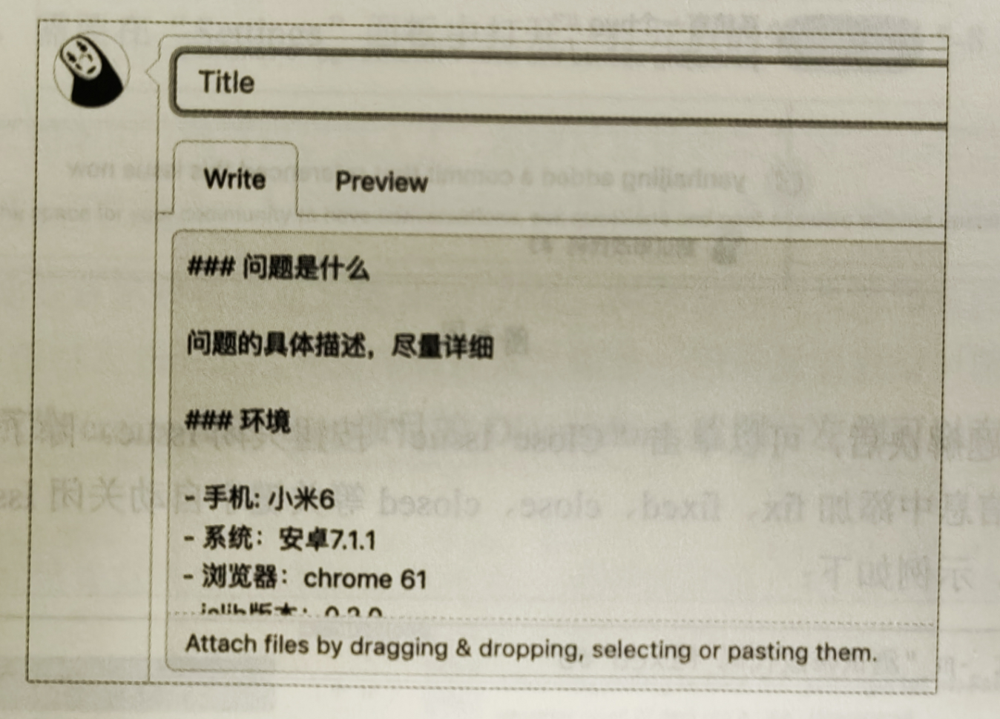

库的开源不是一劳永逸的事情，需要持续迭代和持续维护。
社区协作
一个流行的开源库会有众多使用者，同时会有社区参与贡献和维护。
社区反馈
社区用户可以通过 GitHub 的 Issue 反馈信息，库的开发者需要对 Issue 进行回复，并于 Issue 进行管理。
GitHub 提供了对 Issue 分类的功能，在 Issue 详情页可以为 Issue 添加 Label。
Issue 可以分为 3 类，分别是求助类、故障类、建议类。分类和 GitHub Label 的对应关系如下：
求助类：help wanted
故障类：bug
建议类：enhancement
为了更好的解答 Issue 反馈的问题，就需要了解一些用户的环境信息，从而能够快速复现问题。
社区用户在提问时由于习惯各异，大概率不会提供完整的信息，为了避免反复沟通，可以规范 Issue 的录入内容。
通过 Issue 模板可以实现这个诉求。
只需要在项目的根目录下添加 .github/ISSUE_TEMPLATE.md 文件即可。
在新建 Issue 时，GitHub 会默认展示 ISSUE_TEMPLATE.md 模板中的内容，如下，如果没有此文件，则默认填充为空。
一般对于求助类 Issue，Issue 系统自身就可以完成整个过程的流转，而对于故障类 Issue，则还需要修复 Bug，提交代码，发布新版本。
那么如何将代码提交信息和 Issue 关联起来呢？
其实每个 Issue 都有一个 ID，其位于 Issue 标签的旁边，如下图中显示 Issue ID 是 #3。
在提交信息中添加 Issue ID，即可让提交信息和 Issue 产生联系，GitHub 会在 Issue 下面自动显示和当前 Issue 关联的提交信息。
下面的命令会创建一个关联 Issue ID 为 #3 的提交信息：
git commit -m "测试修改代码 #3"
再次查看 GitHub Issue 页面，结果如图，可以看到提交信息自动关联了过来。
Issue 问题解决后，可以单击 Close Issue 按钮关闭 Issue。除了手动关闭，还可以在提交信息中添加 fix、fixed、close、closed 等关键字自动关闭 Issue。关键字不区分大小写
git commit -m "测试修改代码 fixed #3"
通过提交信息关闭的 Issue 在 GitHub 上会有特殊的关联显示，

Pull request 是一种特殊的社区反馈，反馈内容是源码。对于建议类和故障类 Issue，可以由社区来贡献代码；因为 Pull request 的 ID 和 Issue 是打通的，所以可以相互关联，关联的方式很简单，只需要在评论框中输入 “#” 符号即可。
对于建议类的问题，使用 Issue 并不是最合适的方式。大一点的开源你项目一般会有自己的社区。
为了方便用户交流互动，需要一个讨论区，Issue 不应该承担此功能。
现在可以使用 GitHub 的 Discussions，由于 Discussions 尚未完全成熟，因此新建项目的 Discussions 默认是关闭的，需要在 "Settings" 面板中打开
下面为 create-react-app 项目的 Discussions 截图，左侧可以有分类，右侧是主题列表。
Issue 和 Discussions 的功能不同，因此需要注意二者之间的区别，并合理使用。
Issue 用来反馈求助、问题等，Discussions 用来进行社区讨论，包括计划、草案、希望的新特性等。
社区协作
开源可以给社区中的使用者带来方便，同时社区中库的使用者也会给开发者带来反哺。
在 GitHub 上多人共建一个开源库有 3 种方式：
Git 被设计为去中心化的分布式版本管理系统，其可以有多个远端（Remote），这个特性非常适合社区共建。社区贡献者可以克隆仓库，修改代码，将其推送到自己的远端，然后通知库的开发者合并自己的修改，最早是通过邮件等方式通知库的开发者。
在 GitHub 上，上述这一套流程叫作 Fork + Pull request。社区贡献者可以 Fork 一个库，Fork 其实就是拷贝一份源码到自己的仓库，修改代码后，可以创建一个 Pull request，库的开发者在收到 Pull request 后，可以进行代码审查、评论等操作，没有问题后可以合并代码，上面的步骤完成了一次社区协作的流程
Fork + Pull request 默认适合社区贡献者，人人都可以贡献，由库的开发者决定是否合并社区贡献者提供的修改。这种模式可以协调陌生人一起工作，却没有安全问题。
如果库的贡献者是可以信赖的，那么 Fork 模式就显得效率有些低下了，此时让多个贡献者都可以直接操作同一个项目是更好的选择。GitHub 支持给库设置开发者，首先选择 “Settings” 面板，然后选择 “Collaborators” 标签，可以给库添加共同开发者，
多人都对同一个项目有开发权限，这种模式被称为开发者模式，这种模式比较适合单个项目，并且有少量核心开发者的情况。
如果有多个项目都需要协作开发，或者有很多人一起开发，希望对权限有更细粒度的控制，那么库开发者模式就捉襟见肘了。此时可以使用由 GitHub 提供的 Organization（组织）功能创建一个 Organization，并将一组功能相关的库都放到一个 Organization 下，Organization 对开发者权限的管理也很好用，可以控制不同开发者拥有不同的权限。很多前端项目都是使用 Organization 来管理的。
规范先行
在一个多人相同的项目里，统一的规范对保证开发效率和代码质量至关重要。
编辑器
不同的编辑器有不同的默认行为，同一款编辑器在不同的操作系统上也会有不用的表现，不同的开发者也会有自己的个人喜好。
这些差异给社区协作带来了很大麻烦，为了解决编辑器之间的差异问题，推荐使用 EditorConfig。EditorConfig 可以在不同平台的不同编辑器之间维护一致的公共配置。使用 EditorConfig 需要在项目中提供 .editorconfig 文件，在根目录和子目录下可以同时存在 .editorconfig 文件，子目录优先级更高，而位于根目录中的 .editorconfig 文件则需要将 root 配置设置为 true。
# 根目录的配置
root = true
# Unix-style newlines with a newline ending every file
[*]
end_of_line = lf
insert_final_newline = true
# set default charset
[*.{js}]
charset = utf-8
EditorConfig 支持的配置项和建议：
| 配置项 | 说明 | 建议 |
|---|---|---|
| charset | 指定字符集 | 建议配置 |
| end_of_line | 指定换行符，可选 lf、cr、crlf | 建议配置 |
| indent_style | 缩进风格设置为空格，可选 space、tab | 建议配置 |
| indent_size | 缩进的空格数量设置为 2 个 | 建议配置 |
| trim_trailing_whitespace | 去除行尾空格 | 可选配置 |
| insert_final_newline | 文件结尾插入新行 | 可选配置 |
下面给我们的库添加 EditorConfig 支持，首先在项目根目录下添加 .editorconfig 文件，需要配置一下文件：
.html文件.js文件.json文件.yml文件：YAML 是专门用来写配置文件的语言，比 JSON 格式方便.md文件
.editorconfig 文件具体的配置如下：
# 根目录的配置
root = true
[*]
charset = utf-8
end_of_line = lf
insert_final_newline = true
[*.{html}]
indent_style = space
indent_size = 2
[*.{js}]
indent_style = space
indent_size = 2
[*.{yml}]
indent_style = space
indent_size = 2
[*.{md}]
indent_style = space
indent_size = 2
有些编辑器默认支持 EditorConfig，如 Webstorm；而有些编辑器则需要安装插件后才能支持，如 VS Code 和 Submit Text 等。
EditorConfig 官网有支持的编辑器空列表。以 VS Code 为例，需要安装 EditorConfig for VS Code 插件，
安装好插件后，再次打开编辑器，就可以看到 EditorConfig 的配置生效了。
格式化
EditorConfig 只解决了少数基本风格问题，而对于一段代码来说，代码风格包括更多内容，如 大括号位置、逗号后面的空格等。
试想一下，如果协作开发的两个人使用的代码风格不一样，那么在合并代码时就会带来很多麻烦，虽然在使用 git diff 对比代码时可以忽略空白元素，能够解决空格不统一的问题，但是上面例子中的情况无法解决。
但是当大家协作时，统一的代码风格是非常必要的，可以用工具来统一代码风格，推荐 Prettier 工具。
安装：
npm install --save-dev --save-exact prettier
然后执行下面的命令，即可格式化当前目录下的代码：
npm prettier --write .
如果直接执行上面的命令，则会将全部文件格式化，而有些文件可能并不希望被格式化，如构建的临时文件等，此时可以在项目的根目录添加一个 .prettierignore 文件：
# .prettierignore
dist
coverage
.nyc_output
package-lock.json
尽管 Prettier 是开箱即用的，也不鼓励自定义样式，但还是提供了少量的配置项可以更改，常见的配置如表：
| 配置项 | 描述 | 默认值 |
|---|---|---|
| tabWidth | 缩进的宽度 | 默认为 2 |
| useTabs | 缩进使用 Tab 键 | 默认为空格 |
| singleQuote | 使用单引号 | 默认使用双引号 |
| bracketSpacing | 括号两侧插入空格 | 默认插入 |
| endOfLine | 换行符 | 默认为 lf |
| trailingComma | 多行结构，尾部添加逗号 | es5 |
这里介绍一下 trailingComma，先来介绍背景知识，在 ECMAScript 3 中，在数组的最后面添加逗号，并不会在末尾添加一个空元素，末尾逗号不会影响数组的值。下面两种写法是等价的：
[1, 2] // [1, 2]
[1, 2, ] // [1, 2]
Prettier 的配置项 trailingComma 有 3 个值，分别是 none、es5 和 all，默认值是 es5。建议使用默认值即可，如果有兼容性问题，则可以使用 none。
none: 不添加尾后逗号
es5: 给多行数组和对象添加尾后逗号
all: 给多行数组、对象、函数添加尾后逗号
需要注意的，Prettier 中的部分配置和 EditorConfig 中的部分配置时重叠的，所以要保证两款工具的配置时一致的，否则会相互影响，上面的配置基本使用默认值就可以了。
由于我们习惯使用单引号，下面来看一下如何设置自定义配置，在项目的根目录下添加 .prettierrc.json 文件，并在该文件中添加如下内容，再次执行 npx prettier --write . 命令，即可看到双引号变成单引号了。
{
"singleQuote": true
}
上面我们一直使用命令行完成格式化，除了在命令行中使用 Prettier，Prettier 也能和编辑器集成，
将 Prettier 设置为默认格式化工具，
设置保存时即可自动格式化：
{
"editor.formatOnSave": true,
"editor.defaultFormat": "esbenp.prettier-vscode" // 设置默认格式化工具
}
虽然编辑器自动格式化可以提升编程体验，但是不能保证代码风格一致，存在编辑器可能不支持 prettier 的情况，如果用户未安装插件，或者用户使用的编辑器和设置的不一样等。除了可以和编辑器集成，Prettier 还可以和 Git 集成，在使用 Git 提交时，可以将提交文件自动格式化。
其原理是 Git 自身提供的 hook 功能，每次在提交之前，Git 都会检查是否存在 pre-commit hook，如果存在，则会自动执行其中的命令，在 pre-commit hook 中加入格式化的命令，就可以实现提交时自动格式化了。
其一：直接运行 npm prettier --write . 命令会将整个项目格式化，比较好的做法是只格式化本次提交的文件，pretty-quick 工具可以实现选择性格式化，其有很多参数，--staged 可以实现只格式化待提交的文件。
其二：需要添加 pre-commit hook，并加入格式化的代码，这可能需要对 hook 和命令行有一些了解，还要处理跨平台的问题，同时需要将写好的 hook 让每一名用户都安装。husky 是一个 npm 包，只需要简单安装，就可以给 JavaScript 项目带来使用 hook 的功能。
首先安装 husky，husky 支持自动和手动两种安装方式。
自动安装：
npx husky-init
手动安装：
# 1. 安装
npm install husky --save-dev
# 2. 初始化 husky 配置
npx husky install
# 3. 设置 prepare，这样就会自动执行 2
npm set-script prepare "husky install"
选择上面任意一种安装方式完成 husky 的安装后，会在 package.json 文件中添加如下代码：
{
"scripts": {
"prepare": "husky install"
}
}
同时会多出一个 .husky 目录，其中的 pre-commit 就是我们要用到的 Git hook，husky 会将 Git 的 hooksPath 配置从 .git/hook 修改为 .husky。如果有其他流程也依赖 Git hook，则可能需要注意 hook 的路径变化问题，通过运行 cat .git/config 命令可以看到 hooksPath 的配置，如下：
$ cat .git/config
[core]
hooksPath = .husky
接下来安装 pretty-quick，
npm install --save-dev pretty-quick
通过如下命令将 pretty-quick 添加到 hook 中：
npx husky set .husky/pre-commit "npx pretty-quick --staged"
此时打开 .husky/pre-commit 文件，该文件中的内容如下，也可以不使用 husky set 命令，直接修改这个文件。
#!/bin/sh
. "$(dirname "$0")/_/husky.sh"
npx pretty-quick --staged
接下来，试着修改代码，提交代码，即可体验提交时自动格式化的效果。
代码 Lint
ESLint 是社区中流行的代码校验工具，其通过插件的方式提供了对 JavaScript 代码最佳的校验功能。
安装 ESLint
npm install eslint --save-dev
安装好后，使用如下命令初始化，执行后通过询问的方式完成初始化，参考如下的配置选项即可。
[89]